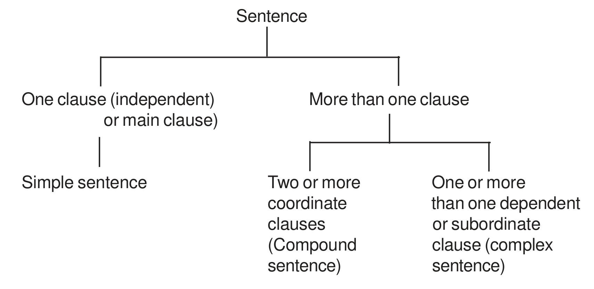

CHAPTER - II
Types of Sentences
Look at the following sentences :
1. Mr Anil Mohanty is a teacher.
2. He teaches us English.
3. He has been teaching English for the last fifteen years.
The verbs is, teaches, has, in the above sentences are finite verbs because they can be changed into past tense forms. The first word in a verb phrase is called a finite verb. On the basis of the finite verbs we can say that all the above sentences have each a finite clause. (A clause has a subject and a verb in the predicate phrase and may form a complete sentence or a part of a sentence.) A complete sentence has at least one independent finite clause. A sentence can be called a ‘Simple Sentence’ if it has one clause. So, all the above sentences are ‘simple sentences’.
Activity - 1IIKinds of Simple Sentences
Look at the following sentences :
1. The cuckoo is singing
2. Is the cuckoo singing in that tree ?
3. Listen to the cuckoo’s song.
4. How beautifully the cuckoo sings !
The four sentences given above are simple sentences, but they have different structures.
The first sentence is called a ‘Declarative Sentence’. Sentence 2, which has a question mark in the end is called an ‘Interrogative Sentence’. Sentence 3 is called an ‘Imperative Sentence’. The last sentence is called an ‘Exclamatory Sentence’.
Hence, simple sentences can be of four types : Declarative, Interrogative, Imperative, and Exclamatory
ADeclarative Sentences
In a declarative sentence the predicate is a statement about the subject; in other words, it is a sentence of statement.
Look at these sentences :
1. Cuttack is on the Mahanadi.
2. The cuckoo sings in spring.
3. Anil teaches English grammar.
4. The story appears very interesting.
5. He is going to sell his car after Holi.
The above sentences are declarative sentences. The first three sentences state facts. The sentence 4 states an opinion and the sentence 5 states an intention.
Declarative sentences of different patterns are given below :
| (i) SV : | Subject | Verb (Intransitive) |
| The boy | came. | |
| The wind | blows. |
| (ii) SVO : | Subject | Verb (transitive) | Object |
| He | answered | the question. | |
| She | will sell | a car. |
| (iii) SVOO : | Subject | Verb | Object (Indirect) | Object (direct) |
| The postman | gave | me | a parcel. | |
| The teacher | taught | us | geography. | |
| The guide | showed | us | the temple. |
| (iv) SVC : | Subject | Verb | Complement |
| Mr Das | is | a teacher. | |
| The sky | got | dark. | |
| He | looks / seems / appears | worried. | |
| This flower | smells | sweet. | |
| This pillow | feels | soft. |
| (v) SVOC : | Subject | Verb | Object | Complement |
| They | found | him | dead. | |
| They | elected | Mr Das | President. | |
| This book | has made | the author | famous. | |
| The result | proved | him | wrong |
BInterrogative Sentences
Sentences which ask questions are usually called ‘Interrogative Sentences’.
Look at the following sentences :
1. Did she attend the class yesterday ?
2. Are you joining the picnic ?
3. What are you looking for ?
4. Who wrote the Mahabharata ?
The first two sentences given above can be answered by saying either yes or no. So they are Yes/No questions. The last two sentences do not begin with auxiliaries, they begin with what and who. So they are Wh-questions / Interrogative sentences.
CImperative Sentences
Examples :
1. Respect your elders. (advice)
2. Please have another cup of tea. (request)
3. March on, soldiers. (command)
4. Let’s go on a picnic. (suggestion)
5. Have mercy on us. (prayer)
6. Beware of pickpockets. (warning)
7. Don’t write on the front page of the answer book. (instructions)
8. Shut the door. (order)
9. Have a smooth journey. (wish)
In the above sentences the subject is you, but it is not mentioned. These sentences express ‘advice’, ‘request’, ‘command’, ‘suggestion’, ‘prayer’, ‘warning’, ‘instructions’, ‘order’, and ‘wish’. Such sentences have the following characteristics :
(i) The subject ‘you’ is not usually used.
(ii) The sentences begin with the verb in its base form.
(iii) The sentences can be made negative.
(iv) There is no change in tense, aspect, voice and modality.
DExclamatory Sentences
Look at the following sentences :
1. What an excellent singer she is !
2. How beautifully she sings !
The above sentences which express the feelings of admiration and surprise are called ‘exclamatory sentences’. These sentences begin with ‘What’ or ‘How’ and there is usually a mark of exclamation at the end of these sentences.
Exclamatory sentences cannot be changed into negative sentences. One cannot say. “What an excellent singer he is not !” Nor can one say., “How beautifully she does not sing !” But the types of sentences such as ‘declarative’, imperative, and interrogative can be turned into negatives.
The above exclamatory sentences can be turned into declarative sentences : (1) She is an excellent singer. (2) She sings very beautifully. Similarly, declarative sentences can be turned into exclamatory sentences :
Example :
| Declarative | - | He is very stupid. |
| Exclamatory | - | How stupid he is ! |
| Declarative | - | He is a very stupid boy. |
| Exclamatory | - | What a stupid boy he is ! |
IIICompound Sentences
Look at the following sentences :
1. He joined the English Essay competition and won the first prize.
2. You may stay here or go home.
In the above sentences we have two finite clauses each. In other words, each sentence has two independent clauses. In sentence 1 the two independent clauses are : (1) He joined the English Essay competition (2) (He) won the first prize. In sentence 2 they are: (1) You may stay here (2) (You may) go home. In sentence 1 the independent clauses are joined by and, and in sentence 2 they are joined by or. The first independent clause in each sentence is called .Main Clause’ and the second independent clause in each sentence is called ‘coordinate clause’. And, or in the above sentences are called ‘conjunctions’ or ‘coordinators’ or ‘coordinating conjunctions’. The sentences which have two or more than two independent clauses and are joined by coordinating conjunctions are known as ‘Compound Sentences’.
Study the following compound sentence :
| And | He came and stayed for a week. |
| But | He is very hardworking but he is really not intelligent. |
| Yet | He is not rich, yet he is happy. |
| Still | She did not do much work, (but) still she passed the examination. |
| Nevertheless | There was no news; nevertheless, she went on hoping. |
| Or | He watches television or goes out to the playground. |
| Or else | Work hard, or else you will fail. |
| Otherwise | Take care, otherwise, you will fail. |
| Therefore | He was taken ill, therefore he could not attend the party. |
| Either ... or | Either you leave or I will. |
| Neither ... or | He is neither handsome, nor is he smart. He neither returned the goods nor paid the bill. |
| Not only ... but also | He not only liked the house but also bought it. |
| Both ... and | He can both sing and act. (Not used in negative sentences) |
| So | I was very hungry, so I wanted to have an early lunch. |
| For | He found it increasingly difficult to read, for his eyes were failing. |
| Besides | I don’t want to go to the cinema, besides I am feeling tired. |
Neither ... nor, either ... or, not only ... but also, both ... and are also called ‘correlative conjuctions’ or ‘correlatives’, for they go in pairs and are related to each other. These correlatives usually join two alternatives.
Activity - 5 Activity - 6IVComplex Sentences
Look at the following sentences :
1. I am certain of completing the work today.
I am certain that I shall complete the work today.
2. Tell me the place of your birth.
Tell me where you were born.
3. Hardworking students succeed in the examination.
Students who work hard succeed in the examinations.
There are three pairs of sentences given above. Each pair of sentences conveys the same meaning. But from the standpoint of constructions, the sentences in each pair are different from each other. The first sentence in each pair has one independent finite clause and a dependent nonfinite clause. The second sentence in each pair of sentences has two finite clauses, an independent clause (or main clause) and dependent clause. A dependent clause is otherwise known as a subordinate clause. In the second sentence of the first pair “I am certain” is the main clause and ‘that I shall complete the work today’ is the subordinate clause. In the pair 2 “Tell me” is the main clause and “where you were born” is the subordinate clause. Similarly in the pair 3 the second sentence has two finite clauses. “Students succeed in the examination” is the main clause and “who work hard” is the subordinate clause. The subordinate clauses can be of three types : Noun clause, Adverb clause, and Relative (Adjective) clause.
Diagram of different types of sentences:

Mock Tests
Quick Reference Guide
The key ideas and rules of this chapter in brief. Each card links to the section that explains it in full.
Finite verbs and clauses
- The finite verb is the first word of the verb phrase; it carries the tense and agrees with the subject (is, teaches, has, shall, must).
- A clause has a subject and a verb. A simple sentence has one finite clause.
Examples
- He has been teaching English for fifteen years. (finite: has)
Watch out In “He shall not enter”, the finite verb is the modal “shall”, not “enter”.
Four kinds of simple sentences
- Declarative — a statement (fact, opinion or intention).
- Interrogative — a question: Yes/No questions begin with an auxiliary; Wh-questions with what, who, why …
- Imperative — advice, request, command, suggestion, prayer, warning, instruction, order, wish.
- Exclamatory — a feeling; begins with What or How and ends with “!”.
Patterns of declarative sentences
- SV — The boy came.
- SVO — He answered the question.
- SVOO — The postman gave me a parcel.
- SVC — The sky got dark.
- SVOC — They elected Mr Das President.
Use S = subject, V = verb, O = object (indirect before direct), C = complement.
Imperative sentences
- The subject “you” is not usually used; the sentence begins with the verb in its base form.
- They can be made negative (Don’t …) but have no change of tense, aspect, voice or modality.
Examples
- Beware of pickpockets. (warning) · Let’s go on a picnic. (suggestion)
Exclamatory sentences
- very + adjective/adverb → How + adj/adv + subject + verb !
- a very + adjective + noun → What a/an + adj + noun + subject + verb !
Examples
- He is very stupid. → How stupid he is !
- He is a very stupid boy. → What a stupid boy he is !
Watch out Exclamatory sentences cannot be made negative.
Compound sentences
- Two or more independent clauses joined by a coordinating conjunction; the first is the main clause, the others coordinate clauses.
- and · but / yet / still / nevertheless · or / or else / otherwise · so / therefore · for · besides
- Correlatives: either … or, neither … nor, not only … but also, both … and
Watch out “both … and” is not used in negative sentences; with neither … nor the verb itself stays positive (He drinks neither tea nor coffee).
Complex sentences
- One main clause + one or more subordinate (dependent) clauses.
- Subordinate clauses are of three types — noun, adverb and relative (adjective) clauses.
Examples
- I am certain (M.C.) that I shall complete the work today (S.C.).
Use To find the main clause, look for the clause that can stand alone as a sentence.